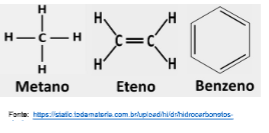
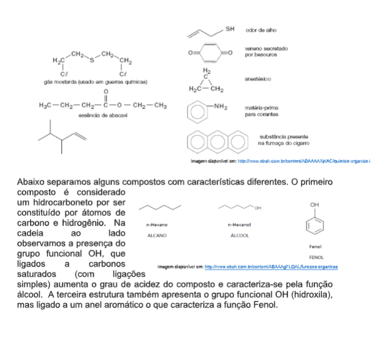
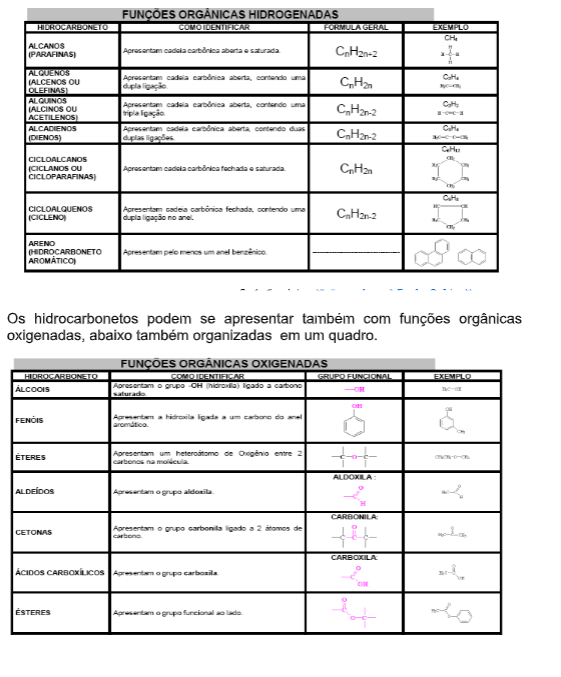
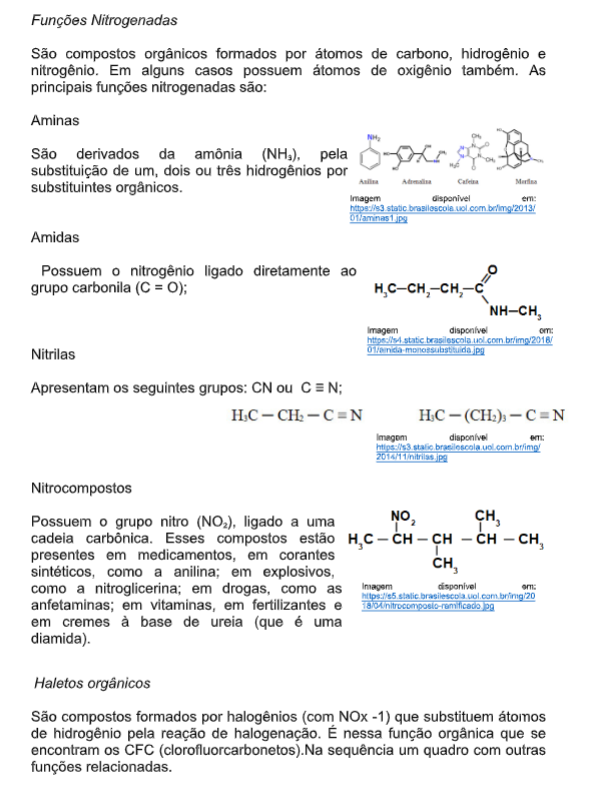
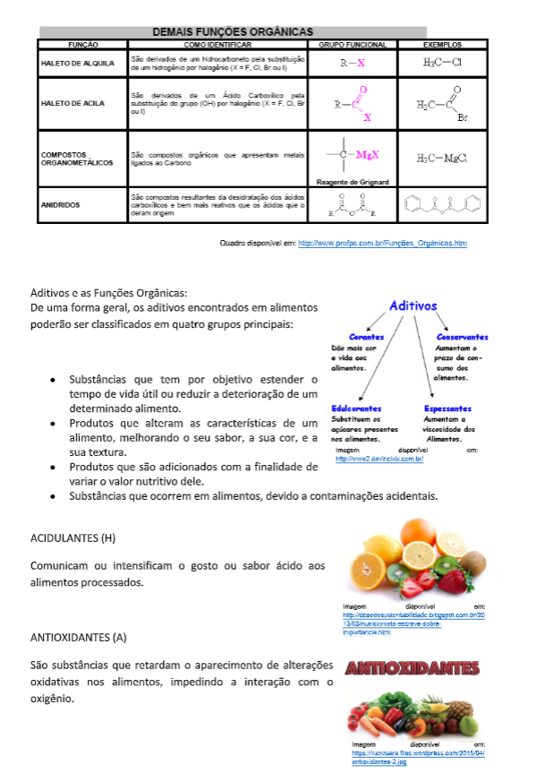
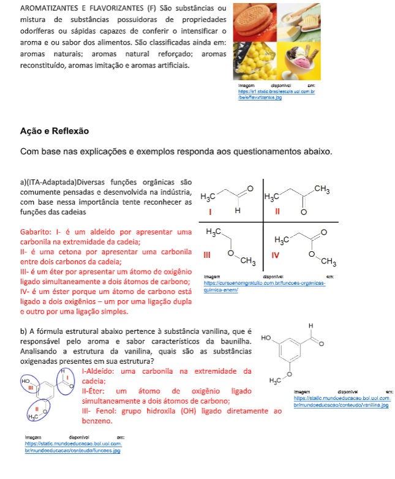
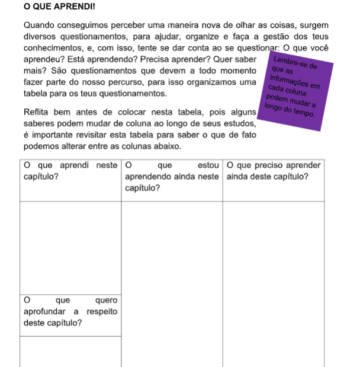

Capítulo 5
A indústria alimentícia e as funções orgânicas
Que relações a química apresenta com a indústria alimentícia? Que fatores a indústria alimentícia impacta na sociedade? Como podemos pensar entender os aspectos químicos que se relacionam com a Industria alimentícia?
CONTEXTUALIZANDOO consumo de aditivos alimentares deve ser controlado devido a uma série de estudos científicos já terem levantado o risco que essas substâncias podem oferecer à saúde, quando consumidos em quantidade elevadas. Entre elas, destacam-se: - Aumento no risco de desenvolver alguns tipos de câncer; - Hipersensibilidade alimentar – reação desencadeada por alergias a determinada substância; - Déficit de atenção com hiperatividade. Devido a isto, o emprego crescente e, muitas vezes, não controlado de aditivos tem preocupado a população tanto que há uma discussão a respeito do uso de aditivos na produção de alimentos considerando a necessidade e a segurança de seu uso. Do ponto de vista tecnológico, o uso alcançou diversos benefícios, porém, existe a preocupação quanto aos riscos de toxicidade e com a saúde do consumidor. Todo este contexto apresentado,
(Re)construindo conceitosPara entendermos quimicamente os aditivos e suas funções nos alimentos, precisamos conhecer um pouco sobre as funções orgânicas que fazem parte de nossa alimentação. Basearemos nossos estudos em questionamentos.
1ª Pergunta: Quais as características do carbono?Os átomos de carbono possuem uma configuração eletrônica com 4 elétrons na última camada, assim os átomos de carbono precisam realizar 4 ligações para se estabilizar. Os átomos de carbono realizam 4 ligações podendo ligar-se uns aos outros formando cadeias carbônicas de comprimento teoricamente ilimitado; essas cadeias podem também se ramificar e também formar ciclos de tamanho e formas as mais variadas possíveis; podem conter outros elementos: como o carbono é tetravalente (forma sempre quatro ligações), mesmo usando duas ou  três valências para se ligar a outros carbonos, ainda sobram valências para formar ligações com outros elementos (os elementos presentes nos compostos orgânicos que são diferentes de carbono e hidrogênio nós chamamos genericamente de heteroátomos). Assim, existe um número muito grande (tem até aparência de infinito) de moléculas diferentes que se pode fazer com o carbono; cada molécula corresponde a um composto com propriedades químicas e físicas diferentes.
2ª Pergunta: Como podemos classificar os compostos orgânicosConseguimos esta separação de modo experimental de modo que os compostos orgânicos podem ser divididos em grupos, de acordo com um conjunto de propriedades químicas que são semelhantes às propriedades de outro membro do grupo e são diferentes das propriedades das substâncias que não pertencem ao mesmo grupo. Porém esta semelhança indica que não são substâncias iguais, pois se tivessem todas as propriedades iguais seria a mesma substância.
Os hidrocarbonetos:
São hidrocarbonetos os compostos formados por átomos de carbono e hidrogênio, com cadeia alifáticas ou cíclicas, normais ou ramificadas, saturadas ou insaturados que apresentam uma dupla ligação, normais ou ramificadas, estas características puderam ser vistas no capítulo anterior, na sequência apresentamos um quadro com as principais características de hidrocarbonetos com funções hidrogenadas e como podemos identifica-los.




REFERENCIAS
BARBOSA, L. C. de. Introdução à Química Orgânica. São Paulo:Prentice Hall, 2004. COUTINHO, Fernanda MB; MELLO, Ivana L .; SANTA MARIA, Luiz C. de. Polietileno: principais tipos, propriedades e aplicações. Polímeros , São Carlos, v. 13, n. 1, p. 01-13, janeiro de 2003. Disponível em <http://www.scielo.br/scielo.php?script=sci_arttext&pid=S0104- 14282003000100005&lng=en&nrm=iso>. acesso em 14 de abril de 2020. https://doi.org/10.1590/S0104-14282003000100005 . FOGAÇA, J. R. V. "História das pilhas"; Brasil Escola. Disponível em: https://brasilescola.uol.com.br/quimica/historia-das-pilhas.htm. Acesso em 22 de março de 2020. FOGAÇA, J. R. V. "Pilha de Daniell"; Manual da Química. Disponível em: http://manualdaquimica.uol.com.br/fisico-quimica/pilha-daniell.htm. Acesso em 22 de março de 2020. MANTOVANI, C. “Recuperação de metais nobres em lixo eletrônico”. Disponível em: http://minasfazciencia.com.br/2016/02/04/recuperacao-de- metais-nobres-em-lixo-eletronico/. Acesso em 23 de março de 2020. PERUZZO, F. M.; CANTO, E. L. do. Química na Abordagem do Cotidiano. 4. ed. São Paulo: Moderna, 2006. v. 3, Química Orgânica Petrucci,R. H. ;Harwood,W. S.; Herring,G. E. General Chemistry. . ed. Canadá: Prentice-Hall, 2007. Cap.1. Disponível em: http://www.iq.usp.br/fmvichi/html/Eletroquimica.pdf . Acesso em 24 de março de 2020. TERRA FILHO, Mario; SANTOS, Ubiratan de Paula. Silicose. J. bras. pneumol. , São Paulo, v. 32, supl. 2, p. S41-S47, maio de 2006. Disponível em <http://www.scielo.br/scielo.php?script=sci_arttext&pid=S1806- 37132006000800008&lng=en&nrm=iso>. acesso em 22 de março de 2020. https://doi.org/10.1590/S1806-37132006000800008 . SINDITEX, “Silicose” Sindicato dos trabalhadores nas indústrias de fiação,malharia, tinturaria, tecelagem e Assemelhados de de Joinville. Disponível em: http://sinditex.org.br/silicose/ . Acesso em 28 de fevereiro de 2020.